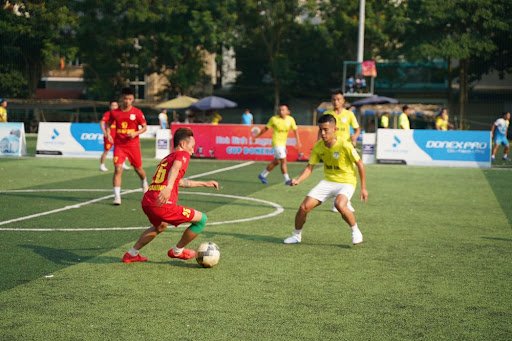

Giới thiệu về ứng dụng
Tại các đô thị hiện nay, không gian dành cho việc tập luyện thể thao ngày càng ít,Tong khi đó,nhu cầu sữ dụng lại theo chiều hướng tăng,Các đội bóng sinh viên ,câu lạc bộ bóng đá tự tổ chức luôn có nhu cầu thuê sân bóng. Việc tìm sân bóng hiện nay chủ yếu qua quen biết, hoặc đến tận nơi trao đổi
Xuất phát từ những thực tế đó,ứng dụng Thuê sân bóng ra đời đáp ứng các nhu cầu sau:
- Người chủ sân có màn hình để đăng tải thông tin về sân bóng như: loại sân (sân cỏ tự nhiên,cỏ nhân tạo,...), địa điểm, thông số của sân, các tiện ích đi kèm (như:nước uống,quần áo thi đấu,trọng tài,...)
- Người chủ sân có thể đièn thông tin về khung giờ sân còn trống,có thể thuê, giá thuê,...
- Người thuê sân có thể tìm duyệt các sân còn trống theo khung giờ - Người thuê sân có thể đặt thuê sân
- Website hiển thị tốt trên màn hình Desktop và Mobile